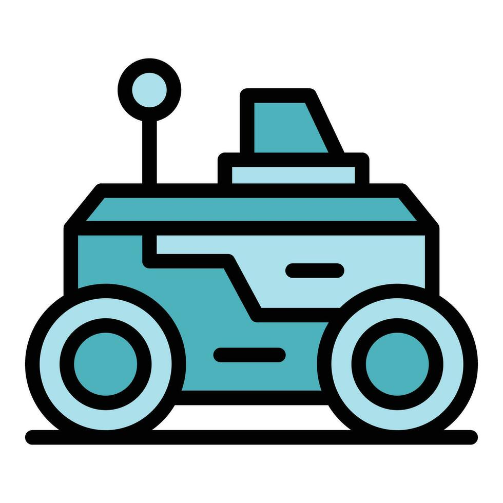
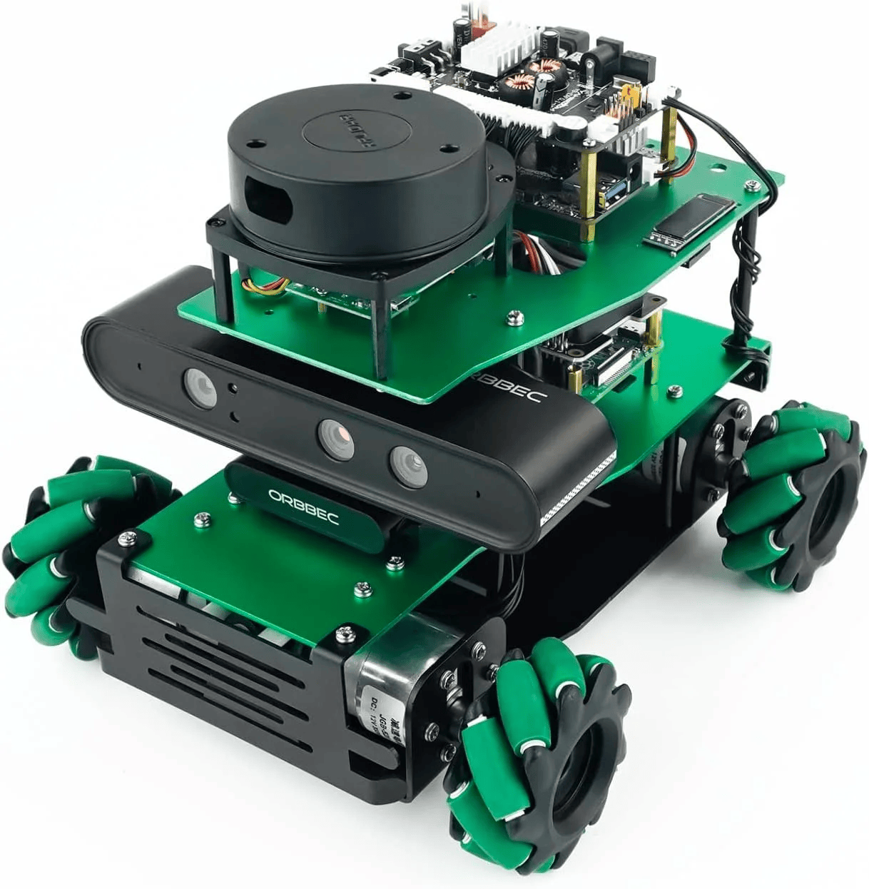
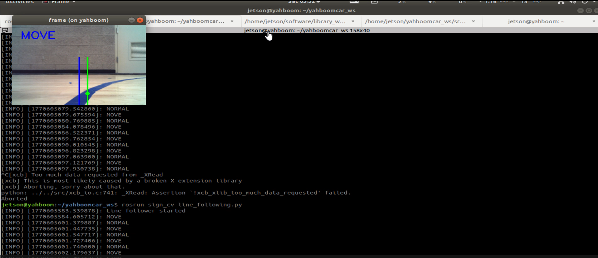
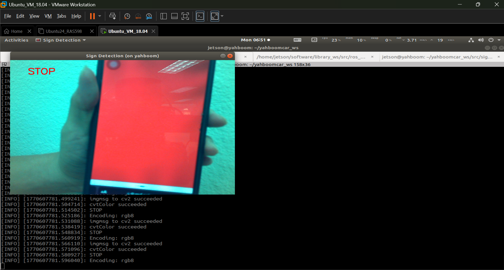

Path Follow & Sign Recognition in Autonomous Vehicles

Description
This project aims to develop an autonomous navigation system for the ROSMASTER X3 that combines path planning, obstacle avoidance, and street sign recognition.
The robot will use onboard sensors and a camera to navigate through a road-like environment while detecting signs such as stop, turn, and speed limit indicators.
Program the robot to track the color line and follow the it with PID control.
Add features for the robot operation, including obstacle avoidance, sign recognition, speed control.
Personal task
This project was done in a team of six.
In this project, I worked on developing a ROS node that read drive the robot to follow the color line with PID control.
I also supported system integration, testing, and debugging to ensure the functionality of the robot.
Equipment
This was the special equipments that we used for the projects.

Green Line Following Demonstration
The video below was our project result, demonstrating the car following green line.
Blue Line Following Demonstration
The video below was our project result, demonstrating the car following blue line.
Work Summary
In this project, I used ROS, Python, and OpenCV for computer vision, nodes communication, decision making, and robot control.
The project was divided into 3 main parts, line following with pid control, sign recognition, and obstacle detection.
Path Following with PID Control
First, I made sure the camera and bringup nodes were launched correctly and that all required topics were available.
Then, I developed the line-following PID control node to keep the robot centered on the path.
I used the image topic /camera/rgb/image_raw and confirmed that the encoding is rgb8.
The image was processed to detect the colored line, and the line position was compared to the center of the camera frame. The position error was calculated as:
\[ error = cx - \frac{w}{2} \]
where cx is the x-coordinate of the detected line centroid, and w is the image width.
This error was then used in the PID equation:
\[ u(t) = K_p e(t) + K_i \int e(t)\,dt + K_d \frac{de(t)}{dt} \]
In discrete form, the control output was computed as:
\[ angular\_z = K_p e + K_i \sum e + K_d (e - e_{prev}) \]
The proportional term (Kp) controlled how strongly the robot corrected its direction based on the current error. Increasing Kp improved responsiveness and allowed the robot to react more aggressively to sharp curves. However, setting Kp too high caused oscillation and unstable movement.
The derivative term (Kd) reduced overshoot by considering how quickly the error changed between frames. Increasing Kd helped smooth the turning behavior and improved stability when entering or exiting curves.
The integral term (Ki) accumulated error over time. In this project, increasing Ki was not effective because the visual error from the camera changed rapidly as the robot moved through curves and varying lighting conditions. A larger Ki caused accumulated error to persist even after the robot had already corrected its direction, resulting in overshoot and unstable steering behavior.

Sign Recognition
For the second node, we wrote an algorithm that read the camera, recognizing the color or traffic sign in order to output appropriate message to the /cmd_vel topic.

Obstacle detection
Meanwhile, we also built a node that read the message from the /laser topic, telling the robot to stop, fall back, or take some kind of avoiding behavior if an oject is detected within a certain distance from the robot by the Lidar.
System integration
Finally, we made sure that all the node worked together and that the robot behaved as expected.
Download Code Download Poster (PPTX)